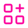

VDI is our core, and we’ve got everything else that your desktops covered.
We design, deploy, run and optimize virtual desktops, plus the access, infrastructure and partners around them.
For over 15 years, we’ve helped organisations give people secure, reliable access to the desktops and applications they need, wherever work takes them. Everything we do is guided by a simple belief: Technology should feel simple.
We’re the Whole Package
You decide who runs day-to-day operations.
The engineering depth is the same in both.
Also ask us about
- Security and vCISO
- Unified Communications
- Managed backup
- DR and business continuity
- Identity services
- Microsoft 365
Connected from End to End
A happy environment depends on many layers, and humbly-speaking, we know all of them.
-
People and workflows
Clinicians, remote staff and shared workstations, each with different needs.
-
Endpoints and access
Scanners, printers, headsets and the devices that run them.
-
Identity and authentication
Tap-and-go sign-in, MFA and badge access without the friction.
-
 Desktop and app delivery
Desktop and app deliveryDesktops and apps delivered reliably to every user.
-

Images, profiles and appsLean golden images, fast profiles and apps that are easy to manage.
-
 Monitoring and experience
Monitoring and experienceWhat users actually feel: logon times, latency and responsiveness.
-
Infrastructure and cloud
Servers, storage, networking and cloud, sized for real workloads.
-
Protection and security
Backup, recovery and security that keep desktops available.
-
When something breaks, we trace it across all layers.
See all partners
Choose a specific service,
or let us give you a hand across all.
Choose a specific service, or let us give you a hand across all.
-
01 Assess
Map users, apps and performance gaps.
-
02 Design
Right-sized architecture built around your users.
-
03 Deploy
From pilot group to full rollout, without disruption.
-
04 Run
Monitoring, support, patching, upgrades.
-
05 Optimize
Performance, capacity and cost tuning.
Trusted to run it
every day
Numbers, a real engagement and a client voice behind every claim on this page.
- Total desktops managed
- 40,000+
- Delivery experience
- Global
- Customers
- 200+
- Years of VDI
- 15


Big brains. No ego.
You talk to the engineer who does the work
Small team, same people for years, direct access
We ask the hard questions early
We explain options and push back on unnecessary complexity
Nothing goes live untested
Pilots, agreed acceptance criteria, rollback plans
We look past the VDI console
Issues traced across devices, sign-in, apps and infrastructure
We leave your team stronger
Documentation and knowledge transfer on every project
What you get
- Documented findings
- Design with assumptions
- Pilot and test results
- Rollback plan
- Runbooks and handover
- Named engineers
Frequently Asked Questions
No. We can scope specific platforms and components, with clear responsibilities for Spadafy, your team and other providers.
Yes. Choose Spadafy ownership of defined operations or engineering support while your team retains daily management.
Omnissa Horizon, Citrix, Azure Virtual Desktop and Windows 365, matched to each platform’s operating model.
Retainers cover requested or scheduled engineering. Monitoring needs an explicit agreement; Full Managed Services includes it.
They follow agreed testing, windows and approvals. We check technical functions; application owners validate workflows.
In the statement of work, based on your operating requirements, service model and environment.
We collect evidence and coordinate escalation. Where we have authorized access, we manage the case with the vendor.
Tell us about your platforms and current support setup in the form below, and an engineer will get back to you.


Are we good?
Our best next steps start with understanding what you’ve already got. Show us your environment, and we'll tell you what's looking good, what we'd keep a close eye on, and what could make things better.
- Platform Health
- Desktop configuration
- Performance and reliability
- Capacity and resources
- Access and operations
Book a Free Consultation1
Get started by scheduling a free consultation. We’ll listen to your needs and explore how we can help bring your project to life.
Review Your Environment2
We’ll assess your existing VDI setup, looking at performance, configuration, capacity and potential areas of risk.
Get a Clear View of What’s Next3
We’ll walk you through the findings, explain what’s working well and highlight the areas worth prioritizing.
Discuss your VDI support requirements
Share your platforms, current support setup and priorities.
We’ll help define the service model, scope and responsibilities.

Proactive patching and health checks keep your VDI stable, not just repaired when it breaks.
A whole team of specialists, so critical knowledge never depends on one or two people.
Extra engineering capacity when you need it, with response times backed by clear SLAs.